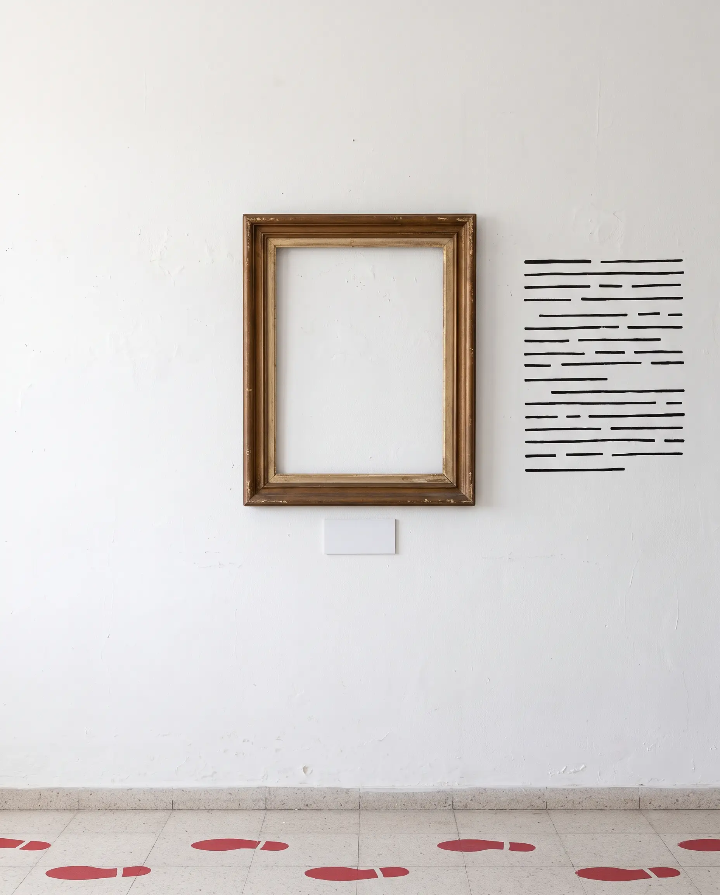

La «Sala de las Ausencias» consiste de una instalación artística territorial física compuesta por marcos vacíos montados en el espacio, los visitantes podrán recorrer la galería y armar rompecabezas de poemas, se busca que los visitantes logren sentir el silencio pesado de la ausencia de quienes estuvieron en ese lugar y, a partir de los relatos que se escuchen, puedan empatizar con ellos.

Facultad de Arte, Diseño y Ciencias de la Cultura Av. Castelli 1300